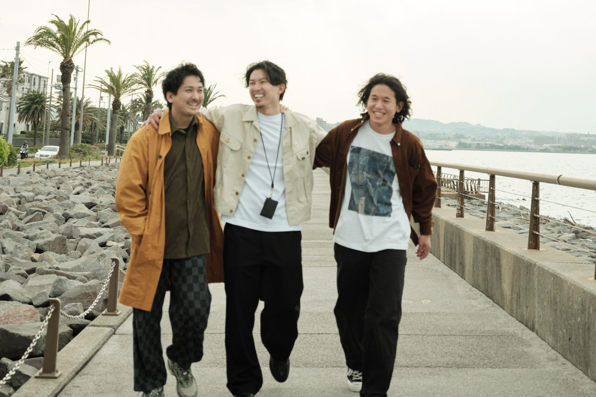
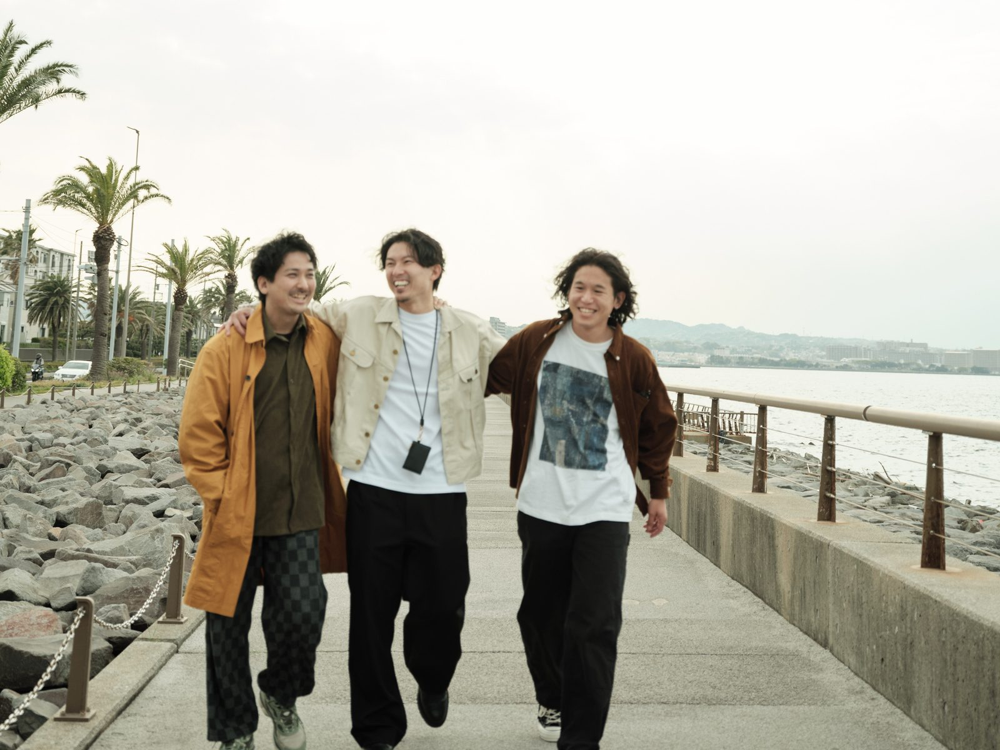

自分の納得で、これからを選ぶ
30代の生き方を問い直す90分。
相談するほどでもない、と思っている違和感を、自分のことばにしていく90分。
書いて、話して、また書く。

20代後半はA案で確定。このページは30代の引き幅だけを見比べるものです。
写真の列を 49% → 42% に狭めたので、枠の形がほぼ正方形になりました。ここに横長（3:2）の画像を入れると、ブラウザ側で左右がさらに切られます（表示されるのは中央の65%ほど）。切り出しを広げても、そのぶんがそのまま見えるわけではありません。
C案だけ画像の比率を 4:3 に変えています。枠の形に近づくので左右の切り落としが減り、同じ範囲を切り出してもより引いて見えます。
左端は0で止まるので、広げるほど中央の人は左へ寄ります（A 45% → B・C 42%）。ぴったり中心に置ける上限は 3520px でした。
相談するほどでもない、と思っている違和感を、自分のことばにしていく90分。

相談するほどでもない、と思っている違和感を、自分のことばにしていく90分。
相談するほどでもない、と思っている違和感を、自分のことばにしていく90分。

決まったら、30代4本と20代1本のヒーローに入れて公開します。もっと引きたい・寄せたい場合は言ってください。